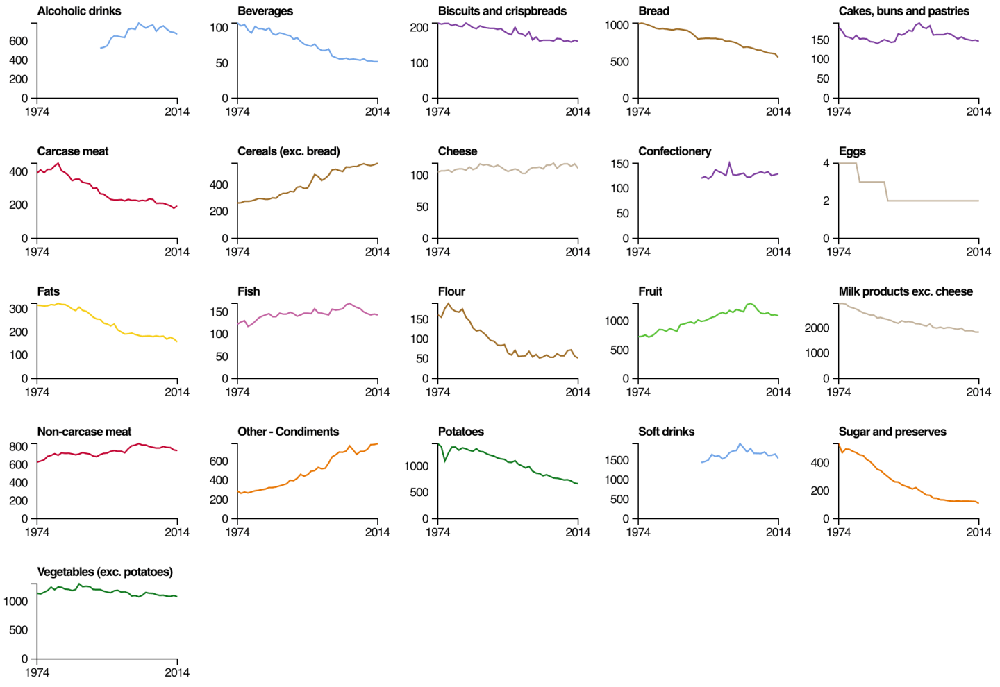
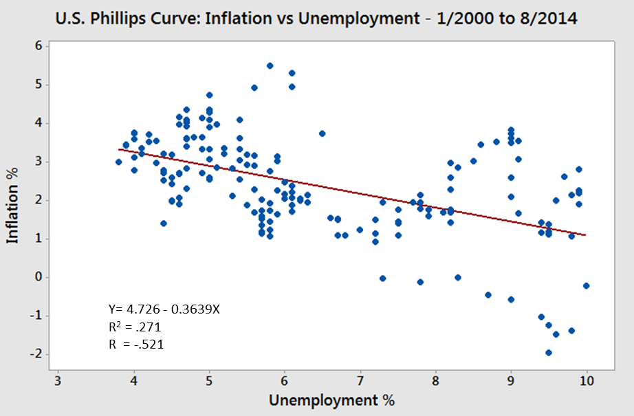
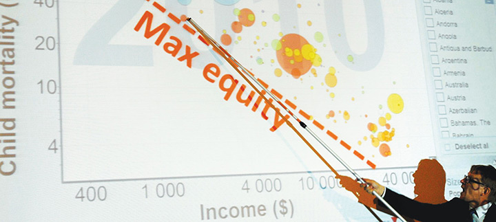

Уровни «аскетичности»
- Математическая визуализация
- Научная визуализация данных (Scientific/Statistical data
visualization)
- Бизнес-аналитика (Business intelligence)
- Визуализация данных для неспециалистов (NEUVis:
Visualization for Non-Expert Users)
- Инфографика в масс-медиа (Infographics, Data journalism)
- Chartjunk
Научная визуализация


Научная [статистическая] визуализация


Визуализация для неспециалистов

Chartjunk